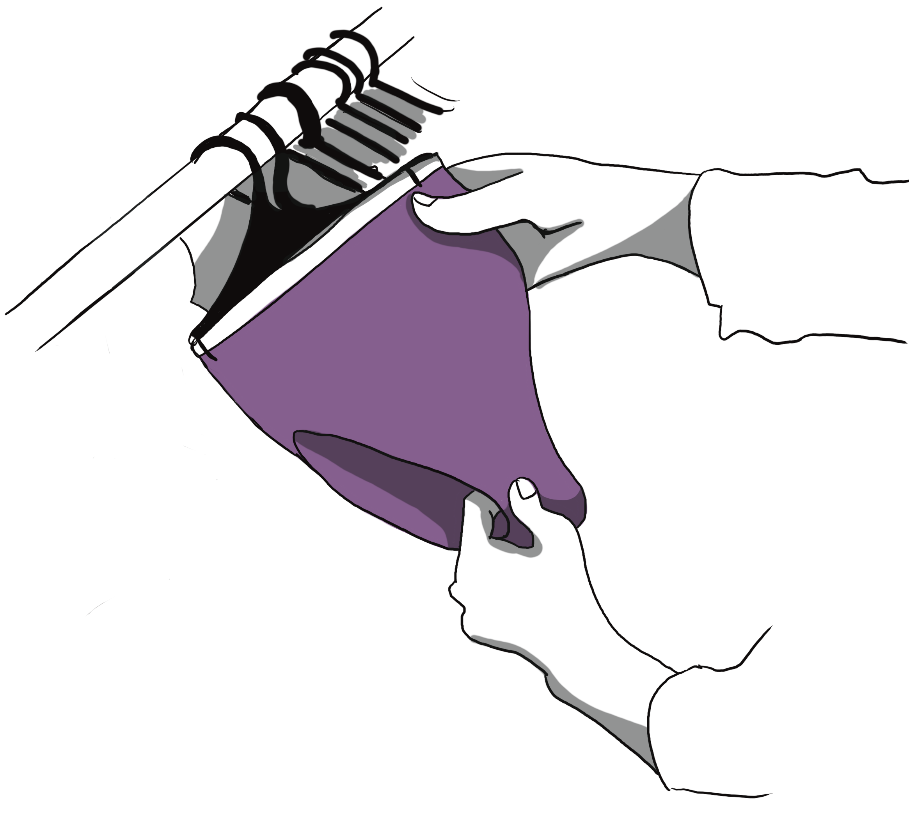

Open Closet ist ein Projekt für Anprobierer von gender-affirming gear. Wir sind in Hannover. Jeden 4. Freitag haben wir Öffnungszeiten. Wir sind keine Laden und verkaufen keine Produkte. Du kannst hier die Sachen nur anprobieren.
Du kannst:
Gender-affirming gear von XSS bis 8XL anprobieren

Sich informieren
Umtauschen und verbinden